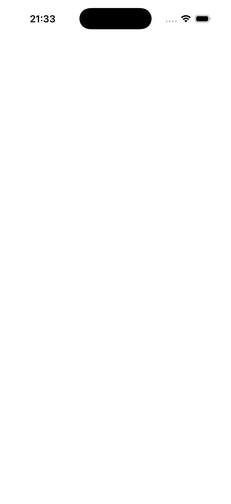

Tus notas importantes, en la pantalla de inicio.
Un bloc de notas sencillo y rápido. Pon solo las notas que necesitas en Inicio, con texto fácil de leer.
Ver cómo funcionaiPhone / Android · Próximamente

Escribe. Elige. Tenlo a la vista.
Abre una nota y escribe. Los cambios se guardan solos.
Pulsa Añadir al inicio en una nota y sigue las instrucciones del dispositivo para añadir el widget.
Toca la nota para abrir su editor.
Fácil de escribir. Fácil de leer.
Tres tamaños de texto
Normal, grande y muy grande. Toca una nota larga para leerla completa.
Tus notas a mano
Sin cuenta. Las notas se guardan en el dispositivo y se pueden restaurar durante 30 días tras eliminarlas.
Diez idiomas
Japonés, inglés, coreano, chino simplificado y tradicional, español, francés, alemán, italiano y portugués de Brasil.
Política de privacidad
Guardamos texto, fechas y ajustes de visualización, eliminación e idioma en tu dispositivo. No enviamos notas a servidores ni al SDK de anuncios y no usamos un SDK de análisis.
Política de privacidadAnuncio
La aplicación gratuita está diseñada para mostrar un banner bajo la lista. No hay anuncios en el editor ni en los widgets. Las notas funcionan aunque el anuncio no cargue.